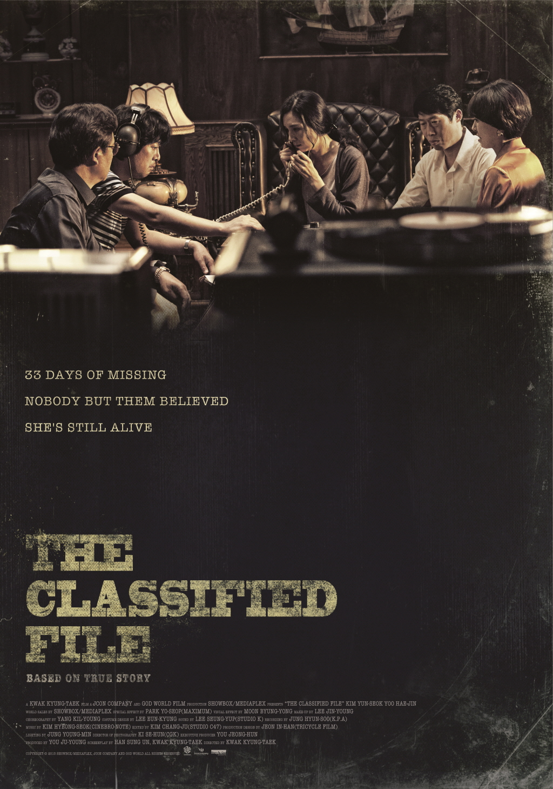
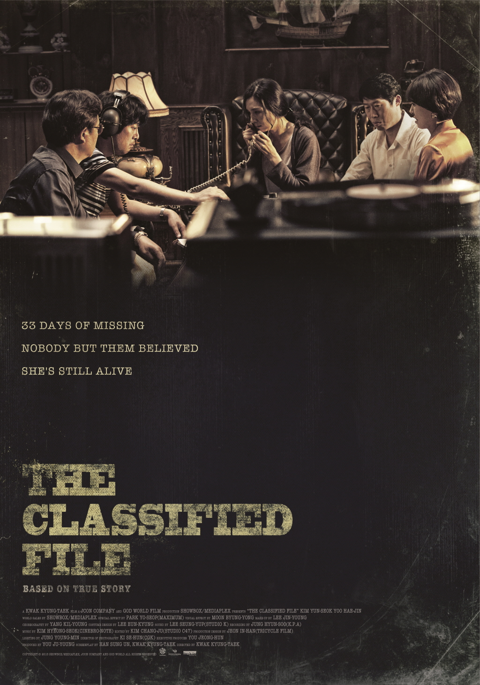
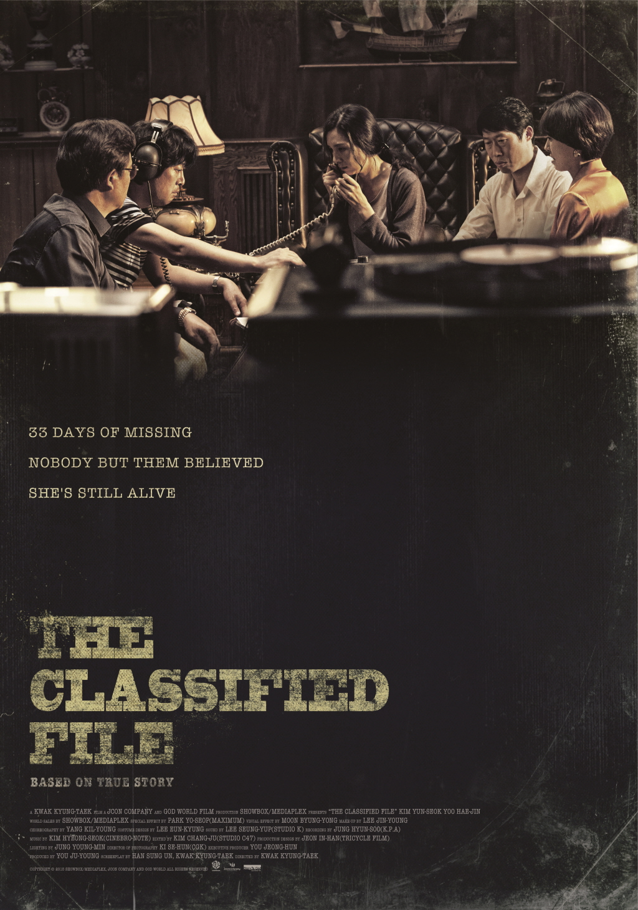

The Classified File
Kwak Kyung-taek
A young girl named Eun-joo has gone missing in Busan in 1978. Without any contact from the kidnapper in the past two weeks and no further leads or clues, the police assume that she's dead. Eun-joo's desperate mother turns to renowned fortune-teller Kim Joong-san, who tells her that her daughter is still alive and that she can be saved if they enlist the help of veteran detective Gong Gil-yong. Despite his skepticism, Gil-yong accepts the case. When one of Joong-san's premonitions about the investigation comes true, Gil-yong begins to believe in his psychic abilities, and the two men team up in an unlikely partnership to find Eun-joo and bring her home.
The Korean version